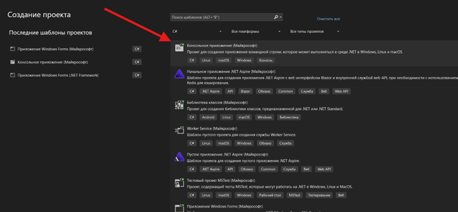
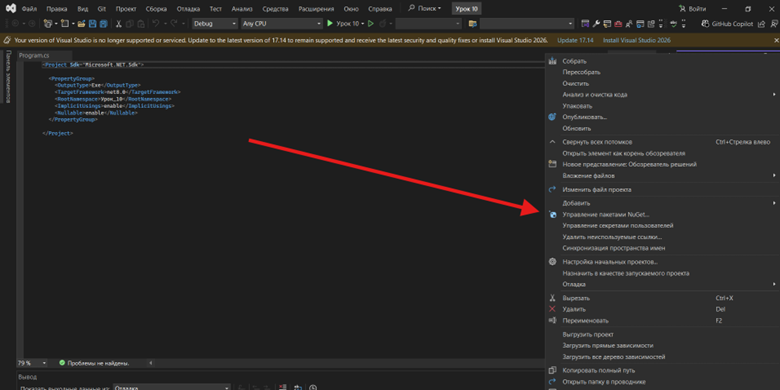
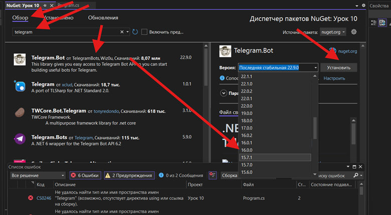
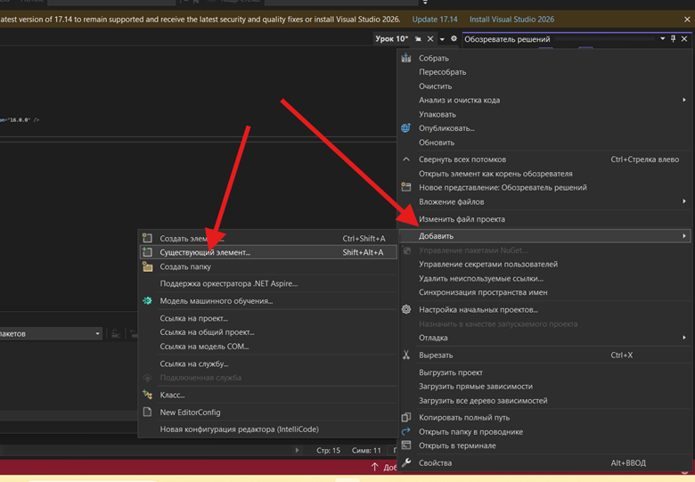
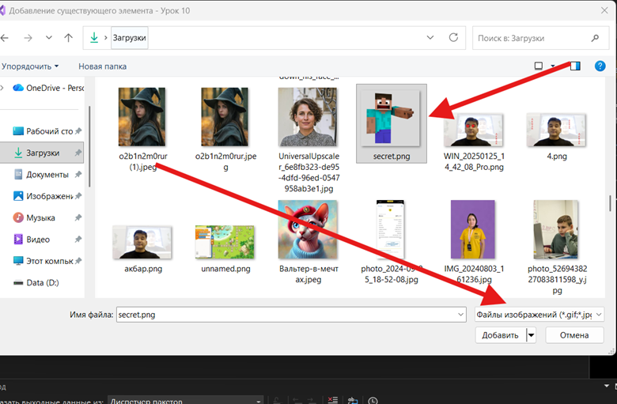
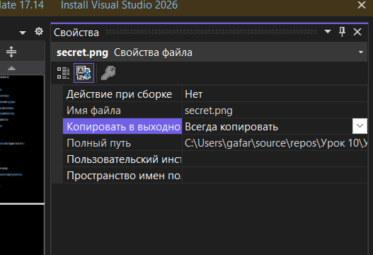
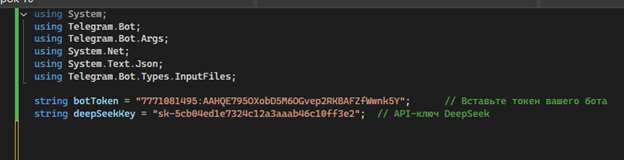
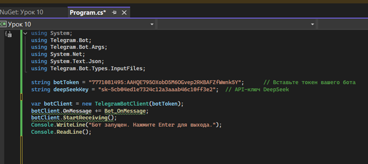
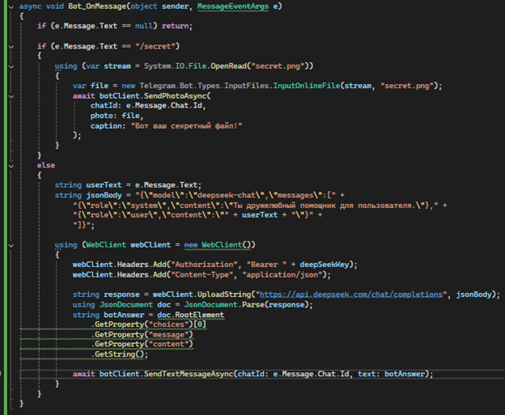
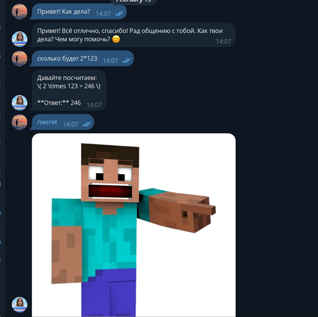

Теоретическая часть
Итак, принцип работы нашего бота такой: пользователь пишет нам в Telegram. Программа получает это сообщение. Если это команда /secret, бот отправляет заранее подготовленное изображение. Иначе бот делает HTTP-запрос к DeepSeek (используя WebClient) и по полученному JSON-ответу формирует текстовый ответ, который отправляет обратно пользователю.
Практическая часть
Глава 1. Создание проекта и подключение библиотек
Заранее создайте телеграм бота в https://t.me/BotFather и скопируйте токен.



ВАЖНО! Версия 16.0.0 - убедитесь, что выбрали именно её перед нажатием "Установить".
using System; using Telegram.Bot; using Telegram.Bot.Args; using System.Net; using System.Text.Json; using Telegram.Bot.Types.InputFiles;



Глава 2. Написание кода бота
Замените
"ВАШ_TELEGRAM_BOT_TOKEN" на реальный токен, который вы получили от BotFather.
string botToken = "ВАШ_TELEGRAM_BOT_TOKEN"; // Токен вашего Telegram-бота string deepSeekKey = "sk-5cb04ed1e7324c12a3aaab46c10ff3e2"; // API-ключ DeepSeek

var botClient = new TelegramBotClient(botToken); botClient.OnMessage += Bot_OnMessage; botClient.StartReceiving(); Console.WriteLine("Бот запущен. Нажмите Enter для выхода."); Console.ReadLine();

Здесь мы создаём объект TelegramBotClient, подписываемся на событие OnMessage (вызовется при любом входящем сообщении) и запускаем фоновое получение сообщений. Console.ReadLine() не даёт программе сразу завершиться.
async void Bot_OnMessage(object sender, MessageEventArgs e) { if (e.Message.Text == null) return; if (e.Message.Text == "/secret") { using (var stream = System.IO.File.OpenRead("secret.png")) { var file = new Telegram.Bot.Types.InputFiles.InputOnlineFile(stream, "secret.png"); await botClient.SendPhotoAsync( chatId: e.Message.Chat.Id, photo: file, caption: "Вот ваш секретный файл!" ); } } else { string userText = e.Message.Text; string jsonBody = "{\"model\":\"deepseek-chat\",\"messages\":[" + "{\"role\":\"system\",\"content\":\"Ты дружелюбный помощник для пользователя.\"}," + "{\"role\":\"user\",\"content\":\"" + userText + "\"}" + "]}"; using (WebClient webClient = new WebClient()) { webClient.Headers.Add("Authorization", "Bearer " + deepSeekKey); webClient.Headers.Add("Content-Type", "application/json"); string response = webClient.UploadString("https://api.deepseek.com/chat/completions", jsonBody); using JsonDocument doc = JsonDocument.Parse(response); string botAnswer = doc.RootElement .GetProperty("choices")[0] .GetProperty("message") .GetProperty("content") .GetString(); await botClient.SendTextMessageAsync(chatId: e.Message.Chat.Id, text: botAnswer); } } }

В этом коде мы используем WebClient для отправки POST-запроса к DeepSeek. Обратите внимание: строка JSON содержит два сообщения – одно системное (для установки поведения бота) и одно от пользователя. Ответ DeepSeek мы распарсили через JsonDocument и отправили в чат.
Тестирование бота
/secret. Бот должен вернуть изображение secret.png с подписью (если указали caption). Проверьте, что изображение приходит и открывается.Если оба теста прошли успешно, значит бот работает правильно: он отвечает на обычные сообщения AI-ответом и отправляет картинку по команде /secret.

Полный код
using System; using Telegram.Bot; using Telegram.Bot.Args; using System.Net; using System.Text.Json; using Telegram.Bot.Types.InputFiles; string botToken = "7771081495:AAHQE795OXobD5M6OGvep2RKBAFZfWwnk5Y"; // Вставьте токен вашего бота string deepSeekKey = "sk-5cb04ed1e7324c12a3aaab46c10ff3e2"; // API-ключ DeepSeek var botClient = new TelegramBotClient(botToken); botClient.OnMessage += Bot_OnMessage; botClient.StartReceiving(); Console.WriteLine("Бот запущен. Нажмите Enter для выхода."); Console.ReadLine(); async void Bot_OnMessage(object sender, MessageEventArgs e) { if (e.Message.Text == null) return; if (e.Message.Text == "/secret") { using (var stream = System.IO.File.OpenRead("secret.png")) { var file = new Telegram.Bot.Types.InputFiles.InputOnlineFile(stream, "secret.png"); await botClient.SendPhotoAsync( chatId: e.Message.Chat.Id, photo: file, caption: "Вот ваш секретный файл!" ); } } else { string userText = e.Message.Text; string jsonBody = "{\"model\":\"deepseek-chat\",\"messages\":[" + "{\"role\":\"system\",\"content\":\"Ты дружелюбный помощник для пользователя.\"}," + "{\"role\":\"user\",\"content\":\"" + userText + "\"}" + "]}"; using (WebClient webClient = new WebClient()) { webClient.Headers.Add("Authorization", "Bearer " + deepSeekKey); webClient.Headers.Add("Content-Type", "application/json"); string response = webClient.UploadString("https://api.deepseek.com/chat/completions", jsonBody); using JsonDocument doc = JsonDocument.Parse(response); string botAnswer = doc.RootElement .GetProperty("choices")[0] .GetProperty("message") .GetProperty("content") .GetString(); await botClient.SendTextMessageAsync(chatId: e.Message.Chat.Id, text: botAnswer); } } }
Важное — API DeepSeek
ВАЖНОЕ! API DeepSeek – "sk-5cb04ed1e7324c12a3aaab46c10ff3e2" (используйте именно этот ключ). Файл secret.png должен находиться рядом с исполняемым файлом (в свойствах файла выставьте «Copy to Output Directory: Copy always»). Без этих условий бот не сможет отправить AI-ответ или картинку.
На данный момент (08.02.2026) API DeepSeek оплачивает Гафаров Акбар. Если API будет недоступен, напишите мне либо вручную получите его сами и согласуйте 100 рублей у руководителя. Получить можно тут: DeepSeek Platform
Итоги урока
В этом уроке мы сделали Telegram-бота на C#, который общается с пользователем через мессенджер. Бот принимает текст от пользователя, пересылает его AI-сервису DeepSeek и возвращает ответ. Кроме того, бот умеет распознавать команду /secret и отправлять в ответ заранее подготовленное изображение. Во время работы над проектом вы познакомились с тем, как устроены Telegram-боты и как они получают сообщения, а также повторили работу с API: отправку HTTP-запроса через WebClient и разбор JSON-ответа с помощью System.Text.Json.
Обсудите с учениками результаты: какие ответы дал DeepSeek, как бот реагировал на команды, и что можно улучшить. Например, можно предложить настроить другие команды, изменить системное сообщение для бота или расширить логику взаимодействия. Это покажет, как простая основа может быть дополнена новыми «фишками».